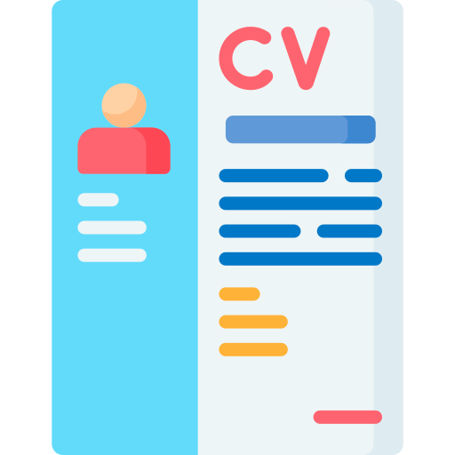

Habilidades
- Programación en C, C++ y Python
- Desarrollo web con HTML y CSS
- Gestión de bases de datos en PostgreSQL y Oracle
- Desarrollo de informes utilizando el lenguaje LaTeX
- Experiencia en manejo de datos a través de las herramientas Git y GitHub
- Desarrollo de código para dispositivos de hardware como Arduino y ESP32, utilizando sus respectivos lenguajes de programación
- Conocimientos en el manejo de sistemas operativos Windows y Linux
- Habilidad en el uso de herramientas de ofimática como Word, Excel y PowerPoint
- Capacidad para realizar reparaciones y mejoras en elementos de hardware
- Fuerte habilidad para trabajar en equipo y comunicación efectiva
- Certificación en la Administración y atención al Cliente

Experiencia Laboral
Practicante en Laboratorio CIMUBB
Junio 2023 - Diciembre 2023
Responsabilidades:
- Aprendizaje autónomo y guiado de el uso de Python en distintos entornos
- Colaboración con compañero para desarrollo de un proyecto
- Creación de documentación tipo tutoriales para el estudio de nuevos practicantes
- Mejora de tutoriales desarrollados por practicantes previos a nuestro grupo
Desarrollador Proyecto Particular Laboratorio CIMUBB
Diciembre 2023 - Agosto 2024
Responsabilidades:
- Desarrollo de Prototipo: Construcción de un dispositivo prototipo para el muestreo de datos.
- Programación: Desarrollo del código necesario para el funcionamiento del dispositivo, incluyendo las tareas de muestreo y almacenamiento de datos.
- Gestión de Datos: Almacenamiento de datos tanto en una tarjeta SD extraíble como en una hoja de cálculo de Google DataSheet.
- Interfaz de Datos: Creación de una interfaz gráfica para la visualización y análisis de los datos recolectados.
- Documentación Técnica: Elaboración de documentación de uso del dispositivo en formato de tutorial.
- Documentación de Procesos: Registro y documentación detallada de todos los procesos involucrados en el desarrollo del proyecto.
Técnico en hardware
Diciembre 2020 - Actualidad
Responsabilidades:
- Actualización de software y hardware en equipos informáticos para la mejora de rendimiento.
- Reparación de equipos informáticos y dispositivos electrónicos.
- Instalación de sistemas operativos y programas en equipos informáticos.
- Construcción de computadoras de escritorio
Educación
Ingeniería Civil en Informática
Universidad del Bio Bio, 2021 - Actualidad
Media
Liceo bicentenario A-59, 2015 - 2020
Básica
Escuela Pedro Ruiz Aldea E-885, 2009 - 2014
Curriculums
Curriculum Formal

Curriculum Informal
Contacto
Email: nicogomezmorgado86@gmail.com
Teléfono: +56 971090888